import seaborn as sns
import pandas as pd
import numpy as np
import matplotlib.pyplot as plt
from palmerpenguins import load_penguins03. Data Analysis with Jupyter and Python
Load Libraries
Loading data
Let’s load an example dataset: the palmerpenguins dataset. It was created by Allison Horst, Alison Hill and Kristen Gorman from data that Gorman collected on the islands of the Palmer Archipelago in Antarctica between 2007 and 2009. The multivariate dataset includes characteristics of the penguins including species and sex, body size measurements such as bill length, bill depth, flipper length and body mass, as well as location and year of measurements. You can read more about this dataset here.


penguins = load_penguins()
# if you had trouble installing the package, you can also read in the data from the csv file by uncommenting the line below.
# penguins = pd.read_csv("penguins.csv")You have created a new object known as a pandas DataFrame, with the contents of the package or the CSV. Think of it as a spreadsheet, but with a lot more useful features for data analysis. It has several methods we can use to handle and analyse the data.
Read more about the pandas DataFrame object here.
Overview of data
We can peek at the data using the .head() function.
penguins.head()| species | island | bill_length_mm | bill_depth_mm | flipper_length_mm | body_mass_g | sex | year | |
|---|---|---|---|---|---|---|---|---|
| 0 | Adelie | Torgersen | 39.1 | 18.7 | 181.0 | 3750.0 | male | 2007 |
| 1 | Adelie | Torgersen | 39.5 | 17.4 | 186.0 | 3800.0 | female | 2007 |
| 2 | Adelie | Torgersen | 40.3 | 18.0 | 195.0 | 3250.0 | female | 2007 |
| 3 | Adelie | Torgersen | NaN | NaN | NaN | NaN | NaN | 2007 |
| 4 | Adelie | Torgersen | 36.7 | 19.3 | 193.0 | 3450.0 | female | 2007 |
We notice that there are a lot of different measurements in the form of columns. For the first section we are going to ask questions about how bill and flipper measurements vary with species, so we”ll make a smaller dataframe containing only the species column and columns containing length measurements.
penguins_lengths = penguins[["species", "bill_length_mm", "bill_depth_mm", "flipper_length_mm"]]
penguins_lengths.head() # Gives us the first 5 rows of the dataframe.
# penguins.head(10) # Gives us the first 5 rows of the dataframe.| species | bill_length_mm | bill_depth_mm | flipper_length_mm | |
|---|---|---|---|---|
| 0 | Adelie | 39.1 | 18.7 | 181.0 |
| 1 | Adelie | 39.5 | 17.4 | 186.0 |
| 2 | Adelie | 40.3 | 18.0 | 195.0 |
| 3 | Adelie | NaN | NaN | NaN |
| 4 | Adelie | 36.7 | 19.3 | 193.0 |
Data cleanup
We noticed that the DataFrame above contain NaN values. This means these entries are missing data. Let’s first find out which rows contain NaN values:
penguins_lengths[penguins_lengths.isnull().any(axis = 1)] # Gives us the rows with at least one missing values.| species | bill_length_mm | bill_depth_mm | flipper_length_mm | |
|---|---|---|---|---|
| 3 | Adelie | NaN | NaN | NaN |
| 271 | Gentoo | NaN | NaN | NaN |
Missing data sometimes create issues for analyses and visualiszation, so we want to drop all the rows that contain NaN values with the .dropna() function:
penguins_lengths = penguins_lengths.dropna().reset_index(drop = True) # Drop rows with missing values and re-numbers the rows.
penguins_lengths.head()| species | bill_length_mm | bill_depth_mm | flipper_length_mm | |
|---|---|---|---|---|
| 0 | Adelie | 39.1 | 18.7 | 181.0 |
| 1 | Adelie | 39.5 | 17.4 | 186.0 |
| 2 | Adelie | 40.3 | 18.0 | 195.0 |
| 3 | Adelie | 36.7 | 19.3 | 193.0 |
| 4 | Adelie | 39.3 | 20.6 | 190.0 |
Quick summary of the data
First we get a summary of the data with the .describe() function.
penguins_lengths.describe()| bill_length_mm | bill_depth_mm | flipper_length_mm | |
|---|---|---|---|
| count | 342.000000 | 342.000000 | 342.000000 |
| mean | 43.921930 | 17.151170 | 200.915205 |
| std | 5.459584 | 1.974793 | 14.061714 |
| min | 32.100000 | 13.100000 | 172.000000 |
| 25% | 39.225000 | 15.600000 | 190.000000 |
| 50% | 44.450000 | 17.300000 | 197.000000 |
| 75% | 48.500000 | 18.700000 | 213.000000 |
| max | 59.600000 | 21.500000 | 231.000000 |
Since we are interested in the species, we take a look at what is in the species column. There are three species.
penguins_lengths.species.unique() # Gives us the unique values in the species column.array(['Adelie', 'Gentoo', 'Chinstrap'], dtype=object)Question 1: how long are the bills of penguins of different species?
(Or, looking at one dependent variables against one independent variable)
We will approach Question 1 with a very simple analysis workflow: split-apply-combine. Many of our scientific experiments also follow this workflow: We collect some measuments (value) from individuals belonging to different groups (key), split the data according to the grouping, apply a summary function to each group, and then aggregate the results. After that you can visualise the results. For example, Figure 3 shows how you would plot a simple bar plot with the bill length data.
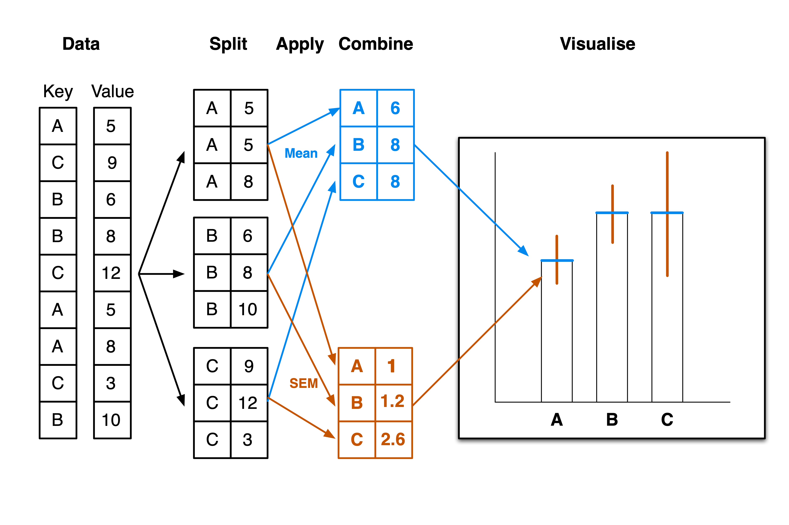
penguins_lengths.groupby("species").mean() # Gives us the mean values for each species.| bill_length_mm | bill_depth_mm | flipper_length_mm | |
|---|---|---|---|
| species | |||
| Adelie | 38.791391 | 18.346358 | 189.953642 |
| Chinstrap | 48.833824 | 18.420588 | 195.823529 |
| Gentoo | 47.504878 | 14.982114 | 217.186992 |
penguins_lengths.groupby("species").sem() # Gives us the standard error of the mean for each species.| bill_length_mm | bill_depth_mm | flipper_length_mm | |
|---|---|---|---|
| species | |||
| Adelie | 0.216745 | 0.099010 | 0.532173 |
| Chinstrap | 0.404944 | 0.137687 | 0.864869 |
| Gentoo | 0.277882 | 0.088474 | 0.584731 |
Plot an old-fashioned bar plot, which shows the mean and S.E.M. of each group
Luckily, a lot of these plotting functions already exist in data visualisation packages such as seaborn:
ax1 = sns.barplot(data = penguins_lengths,
x = "species",
y = "bill_length_mm",
errorbar = "se");
# Axes should always be labelled.
ax1.set(xlabel="Species", ylabel="Mean Bill length (mm)", title = "Bar Plot of Penguin Bill Length by Species");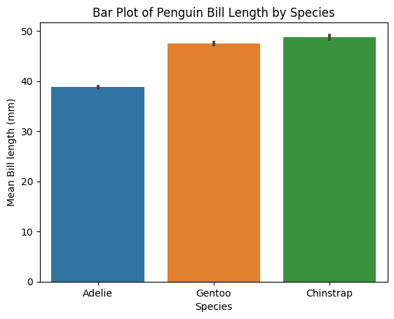
Plot a box plot, which shows the data quartiles
ax2 = sns.boxplot(data = penguins_lengths,
x = "species",
y = "bill_length_mm",
hue = "species");
ax2.set(xlabel="Species", ylabel="Mean Bill length (mm)", title = "Box Plot of Penguin Bill Length by Species");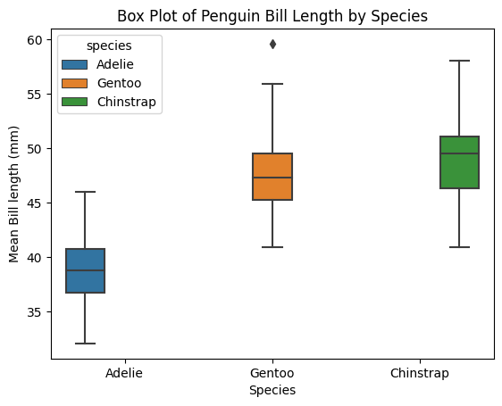
Plot a swarmplot, which shows all the data points
ax3 = sns.swarmplot(data = penguins_lengths,
x = "species",
y = "bill_length_mm",
hue = "species");
ax3.set(xlabel="Species", ylabel="Mean Bill length (mm)", title = "Swarm Plot of Penguin Bill Length by Species");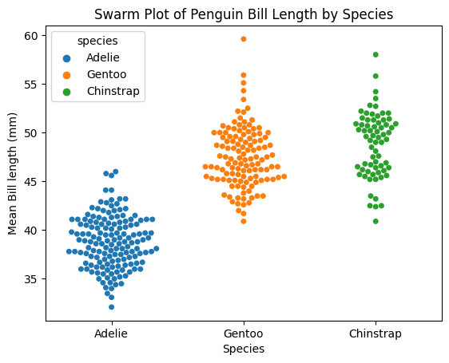
Question 2: How do all the length metrics vary with species?
(Or, looking at more metrics systematically.)
penguins_lengths.head() # Let's revisit the DataFrame| species | bill_length_mm | bill_depth_mm | flipper_length_mm | |
|---|---|---|---|---|
| 0 | Adelie | 39.1 | 18.7 | 181.0 |
| 1 | Adelie | 39.5 | 17.4 | 186.0 |
| 2 | Adelie | 40.3 | 18.0 | 195.0 |
| 3 | Adelie | 36.7 | 19.3 | 193.0 |
| 4 | Adelie | 39.3 | 20.6 | 190.0 |
We don’t have to visualize only 1 metric at a time. We can look at all of the metrics at the same time. The plotting package seaborn has a function catplot() that does this automatically for you.
# `catplot` is short for "categorical plot",
# where either the x-axis or y-axis consists of categories.
ax4 = sns.catplot(data=penguins_lengths,
kind="bar", # there are several types of plots.
errorbar="sd", # plot the error bars as ± standard deviation, use this line if you have seaborn 0.12.x
# ci="sd", # plot the error bars as ± standard deviations, use this line if you have seaborn 0.11.x.
col="species" # plot each species as its own column.
)
ax4.set_axis_labels("", "Length (cm)");/Applications/anaconda3/envs/dabest/lib/python3.9/site-packages/seaborn/axisgrid.py:118: UserWarning: The figure layout has changed to tight
self._figure.tight_layout(*args, **kwargs)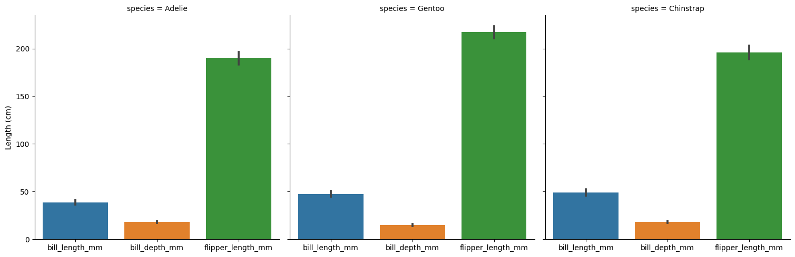
You might quickly notice that the plot isn’t what we wanted, but this is how the default penguins DataFrame gets processed and plotted by seaborn.catplot. The current plot only allows us to investigate the relationships the three metrics within species. This is interesting but not greatly informative (e.g. we know flippers are longer than bills). What we want is to directly compare metrics between species.
To do so, we need to reshape the data.
Reshaping Data
Ourpenguins_lengths dataframe is in the wide-form (below left) and we want to turn it into the long-form (below right). In the original penguins_lengths dataframe, the data is organised by individuals (one individual penguin in each row) and the columns contain a mixture of variables that describe that individual. In a long-form dataframe, each row is an observation or data point, and each column is a variable that describe the data point. (Please read Hadley Wickham’s article to learn more about tidiness of datasets.)
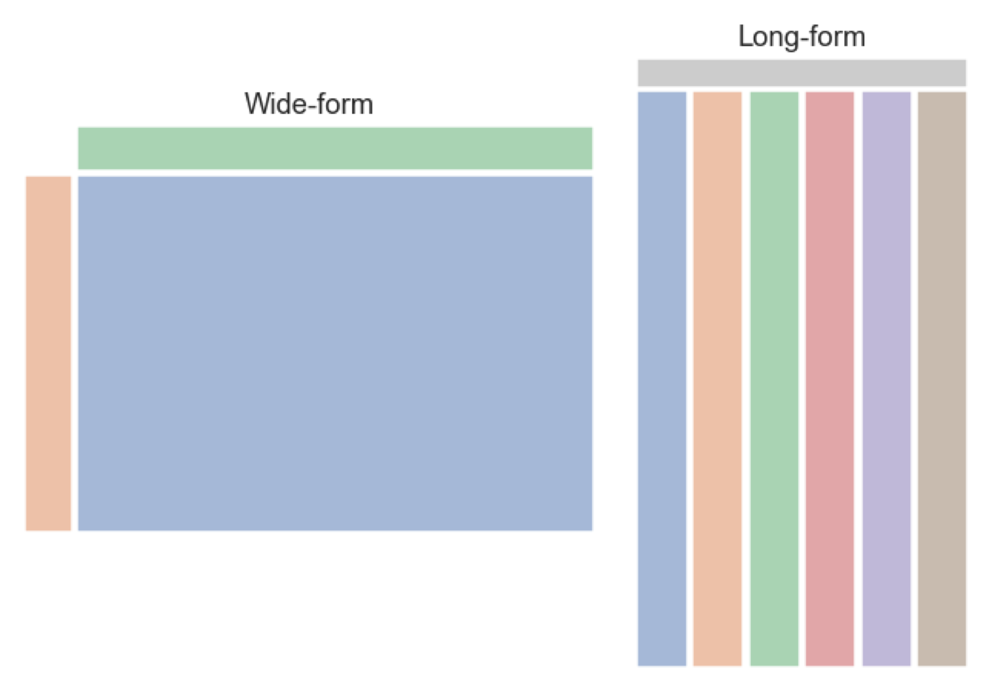
penguins_lengths # This is our wide table.| species | bill_length_mm | bill_depth_mm | flipper_length_mm | |
|---|---|---|---|---|
| 0 | Adelie | 39.1 | 18.7 | 181.0 |
| 1 | Adelie | 39.5 | 17.4 | 186.0 |
| 2 | Adelie | 40.3 | 18.0 | 195.0 |
| 3 | Adelie | 36.7 | 19.3 | 193.0 |
| 4 | Adelie | 39.3 | 20.6 | 190.0 |
| ... | ... | ... | ... | ... |
| 337 | Chinstrap | 55.8 | 19.8 | 207.0 |
| 338 | Chinstrap | 43.5 | 18.1 | 202.0 |
| 339 | Chinstrap | 49.6 | 18.2 | 193.0 |
| 340 | Chinstrap | 50.8 | 19.0 | 210.0 |
| 341 | Chinstrap | 50.2 | 18.7 | 198.0 |
342 rows × 4 columns
# The code in this section turns a wide table into a long table.
penguins_tidy = pd.melt(penguins_lengths.reset_index(),
id_vars=["index","species"],
var_name="metric",
value_name="cm")
penguins_tidy = penguins_tidy.rename(columns = {"index": "ID"})penguins_tidy # This is our long table.| ID | species | metric | cm | |
|---|---|---|---|---|
| 0 | 0 | Adelie | bill_length_mm | 39.1 |
| 1 | 1 | Adelie | bill_length_mm | 39.5 |
| 2 | 2 | Adelie | bill_length_mm | 40.3 |
| 3 | 3 | Adelie | bill_length_mm | 36.7 |
| 4 | 4 | Adelie | bill_length_mm | 39.3 |
| ... | ... | ... | ... | ... |
| 1021 | 337 | Chinstrap | flipper_length_mm | 207.0 |
| 1022 | 338 | Chinstrap | flipper_length_mm | 202.0 |
| 1023 | 339 | Chinstrap | flipper_length_mm | 193.0 |
| 1024 | 340 | Chinstrap | flipper_length_mm | 210.0 |
| 1025 | 341 | Chinstrap | flipper_length_mm | 198.0 |
1026 rows × 4 columns
ax5 = sns.catplot(data=penguins_tidy,
x="metric",
y="cm",
hue="species",
kind="bar",
errorbar="sd",
aspect=1.5
)
ax5.set(xlabel="Measurements",
ylabel="Length in mm",
title = "Cat plot of Penguin Body Measurements by Species",
xticklabels=["Bill Length", "Bill Depth", "Flipper Length"]);/Applications/anaconda3/envs/dabest/lib/python3.9/site-packages/seaborn/axisgrid.py:118: UserWarning: The figure layout has changed to tight
self._figure.tight_layout(*args, **kwargs)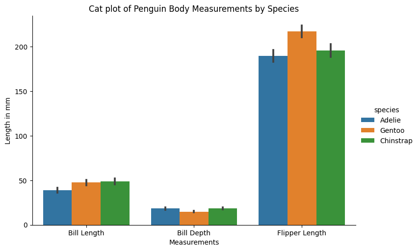
catplot allows you to do plot different kinds of plots in the same format easily. Let’s say we want to see a box plot:
ax6 = sns.catplot(data=penguins_tidy,
kind = "box",
x="metric", y="cm", hue="species",
aspect=1.5,
# errorbar="sd", # plot the error bars as ± standard deviation, use this line if you have seaborn 0.12.x
# ci="sd", # plot the error bars as ± standard deviations, use this line if you have seaborn 0.11.x.
)
ax6.set(xlabel="Measurements",
ylabel="Length in cm",
title = "Catplot of Penguin Body Measurements by Species",
xticklabels=["Bill Length", "Bill Depth", "Flipper Length"]);/Applications/anaconda3/envs/dabest/lib/python3.9/site-packages/seaborn/axisgrid.py:118: UserWarning: The figure layout has changed to tight
self._figure.tight_layout(*args, **kwargs)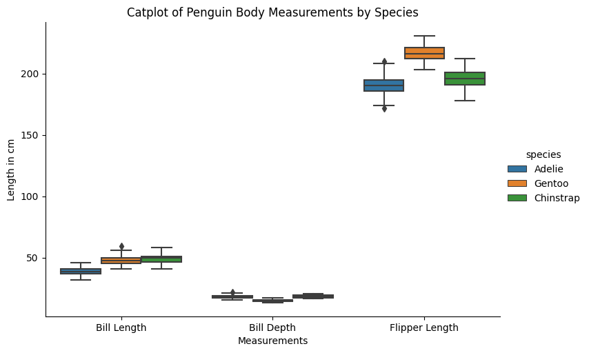
Question 3: how does bill length vary with flipper length?
(Or, how do we explore the correlation between metrics?)
Next to the categorical plot, the scatter plot is a very useful visualization tool for biological experiments. Often we want to know how one variable is correlated with another, we can then use a scatterplot to easily take a quick look.
# Draw a scatteplot of petal width versus length with a simple linear regression line
ax7 = sns.regplot(data=penguins,
ci=95,
x="bill_length_mm",
y="flipper_length_mm")
from scipy.stats import pearsonr
pearsonsr, p = pearsonr(penguins.dropna()["bill_length_mm"], penguins.dropna()["flipper_length_mm"])
ax7.set(xlabel="Bill Length (mm)", ylabel="Flipper Length (mm)", title = "Correlation between Bill Length and Flipper Length");
# ax7. text(35, 220, f"r = {pearsonsr:.2f},\np = {p:.2f}") # Uncomment this line if you want to also present p-value.
ax7.text(35, 220, f"r = {pearsonsr:.2f}");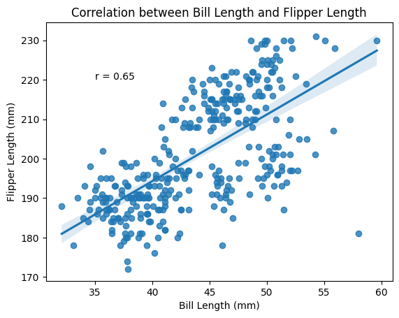
We see some clustering of the data points and we suspect the clusters correspond to the different species of penguins. Let”s colour the points by species.
for s in penguins.species.unique():
ax8 = sns.regplot(data=penguins.loc[penguins.species == s],
ci=95,
x="bill_length_mm",
y="flipper_length_mm", label = s)
ax8.legend()
ax8.set(xlabel="Bill Length (mm)", ylabel="Flipper Length (mm)", title = "Correlation between Bill Length and Flipper Length by Species");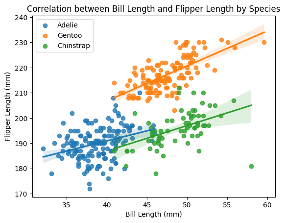
Seaborn allows you to do that more systematically with pairplot
This is like doing a scatter plot for each pair of the variables in one go. On the diagonal, distributions of values within each species group are plotted for each variable.
fig = sns.pairplot(penguins, hue="species")/Applications/anaconda3/envs/dabest/lib/python3.9/site-packages/seaborn/axisgrid.py:118: UserWarning: The figure layout has changed to tight
self._figure.tight_layout(*args, **kwargs)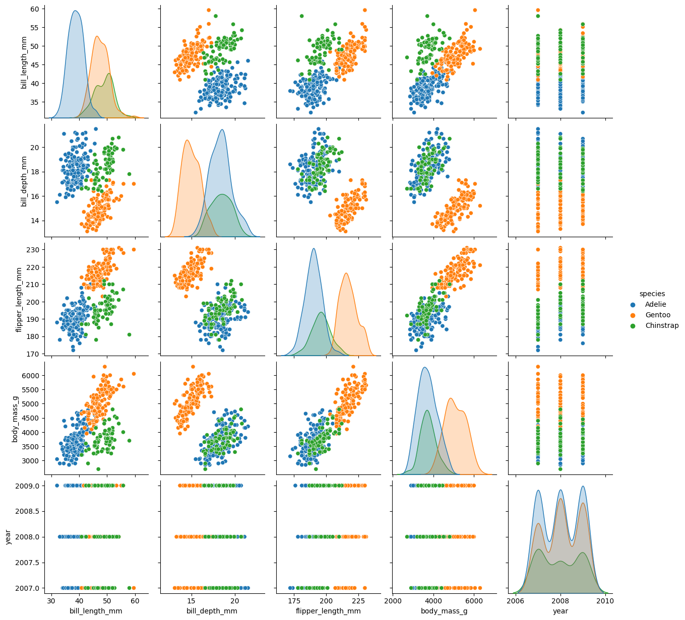
We can see from the pair plots above that the relationshipship between all the metrics are complex and difficult to summary. If you have time, you can explore the bonus notebook, where we discuss how to concisely describe the data by reducing the dimentionality of this dataset Bonus PCA Analysis
Towards Publication-Ready Plots
Try to achieve as much of the final figure requirements as possible via code
penguins_all_metrics = penguins[["species", "bill_depth_mm", "bill_length_mm", "flipper_length_mm", "body_mass_g"]].dropna().reset_index(drop = True)
all_metrics = ["bill_depth_mm", "bill_length_mm", "flipper_length_mm", "body_mass_g"]
all_metrics['bill_depth_mm', 'bill_length_mm', 'flipper_length_mm', 'body_mass_g']y_titles = [ "Bill Length (mm)", "Bill Depth (mm)", "Flipper Length (mm)", "Body Mass (g)"]
letters = ["A", "B", "C", "D"]import matplotlib.pyplot as plt
f, ax = plt.subplots(2, 2, figsize=(10, 10))
all_axes = ax.flatten()
for i, metric in enumerate(all_metrics):
current_axes = all_axes[i]
sns.swarmplot(data=penguins_all_metrics, size = 3.5,
x="species", y=metric, hue = "species",
ax=current_axes)
ylim = current_axes.get_ylim()
current_axes.set(ylabel=y_titles[i])
if i != 0:
current_axes.get_legend().remove()
current_axes.text(-1, ylim[1], letters[i], fontsize = 15, fontweight = "semibold")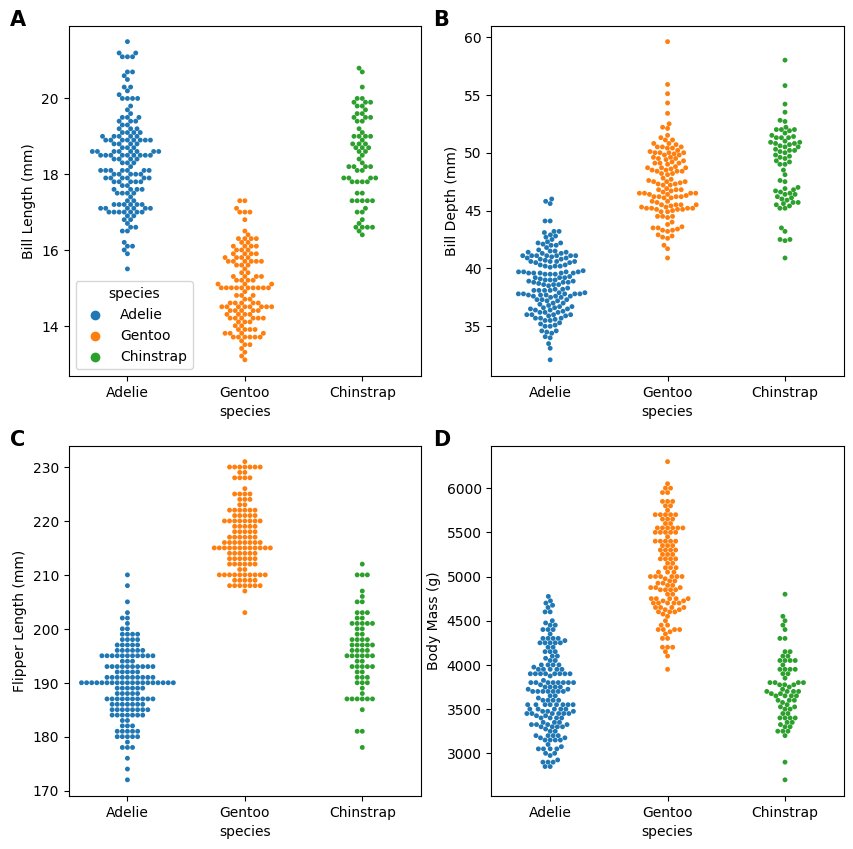
f.savefig("myplot.svg")
f.savefig("myplot.png", dpi = 300)